Descubre qué trío de fotos eres


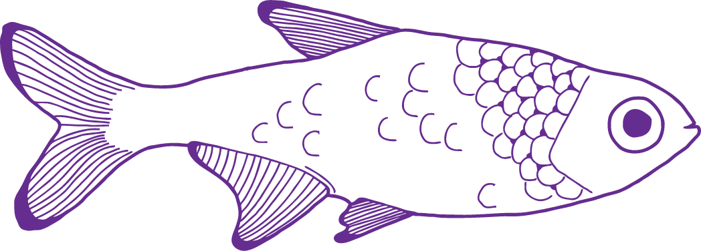
Sobre mí
Hola!! Me llamo Martina.
Tengo 24 años.
Estoy estudiando Diseño Industrial.
Antes de eso, estudiaba Ped. en Matemáticas.
Trabajo en una pastelería.
Me gusta ver series y películas animadas.
Mis favoritas son:
- Over the Garden Wall
- Coraline
- Fullmetal Alchemist: Brotherhood
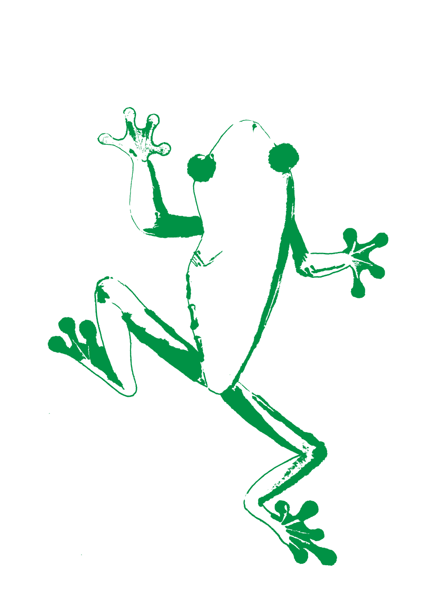
Me gustan mucho los animales, pero particularmente me gustan más los gatos, los peces, los insectos, las ranas y los patos.
Me gusta el té amargo, el mote con huesillo, las cositas dulces y las cositas saladas.
Kai
Llegó el 2022
con 3 meses.
Dijeron que era ella,
pero le salieron bolas.
Kai
A Kai le gusta dormir
en las toallas,
entremedio de las cortinas,
tirar por la ventana
el churu de pollito
y es muy regalón
—cuando le conviene—.
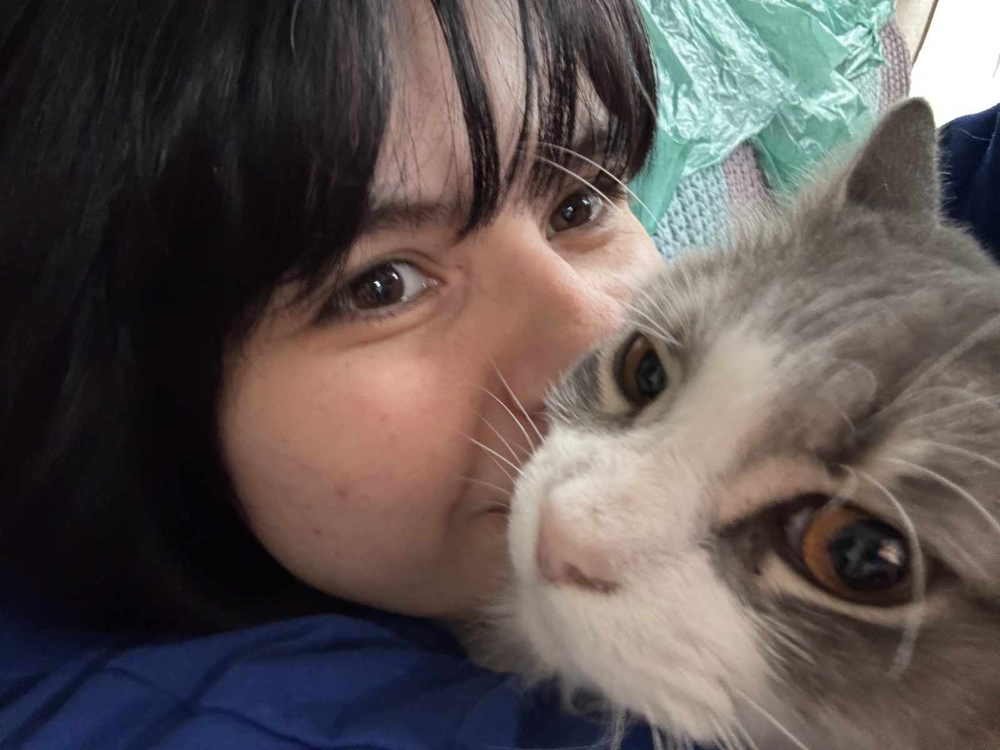
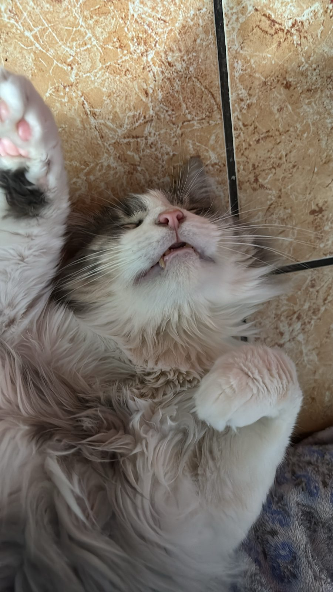
Disfruto mucho ir a conciertos.
Ir a cancha.
Saltar.
La vida se pausa por dos horas.
Algunos de los conciertos a los que he podido ir desde que trabajo
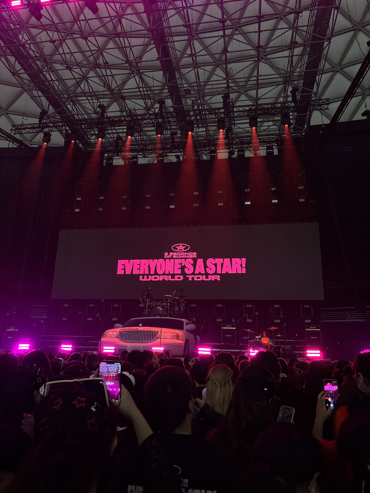
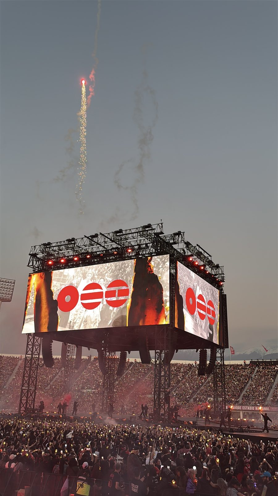
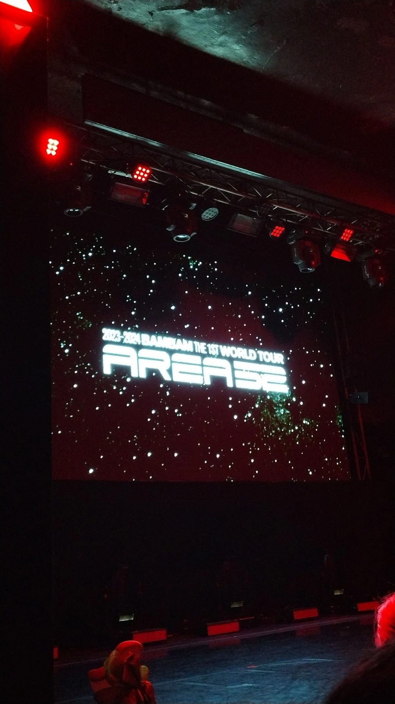
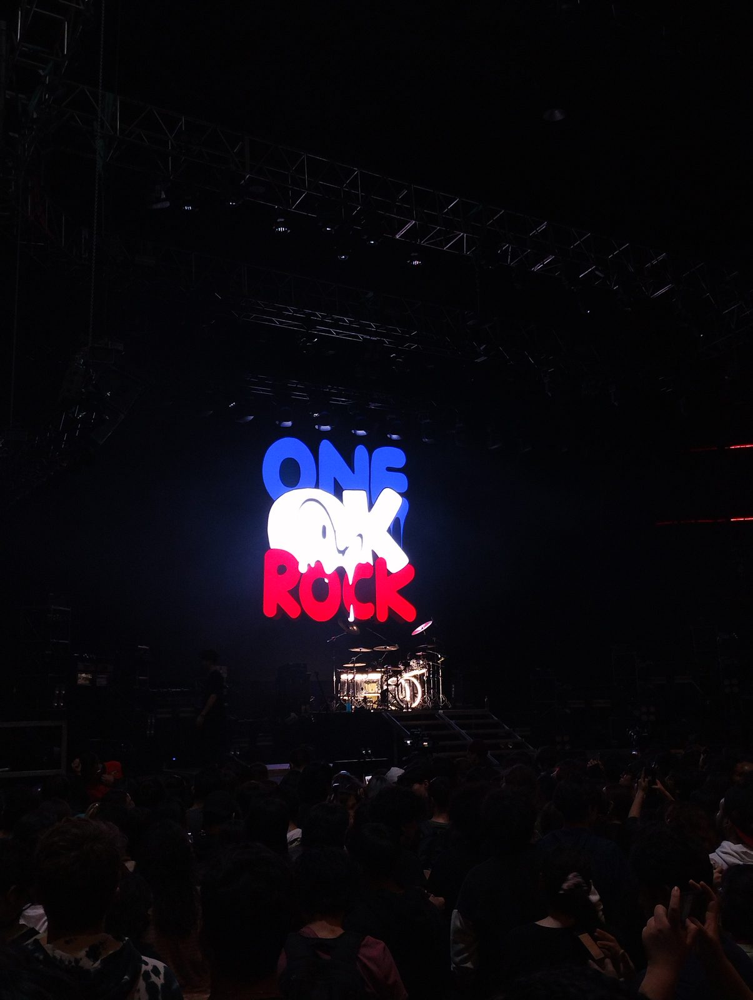
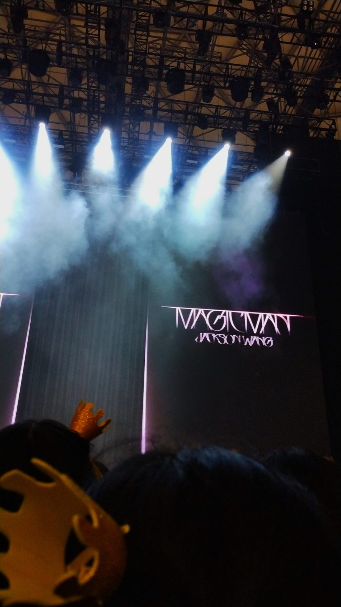
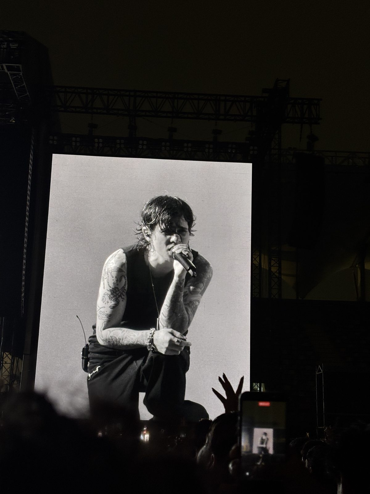
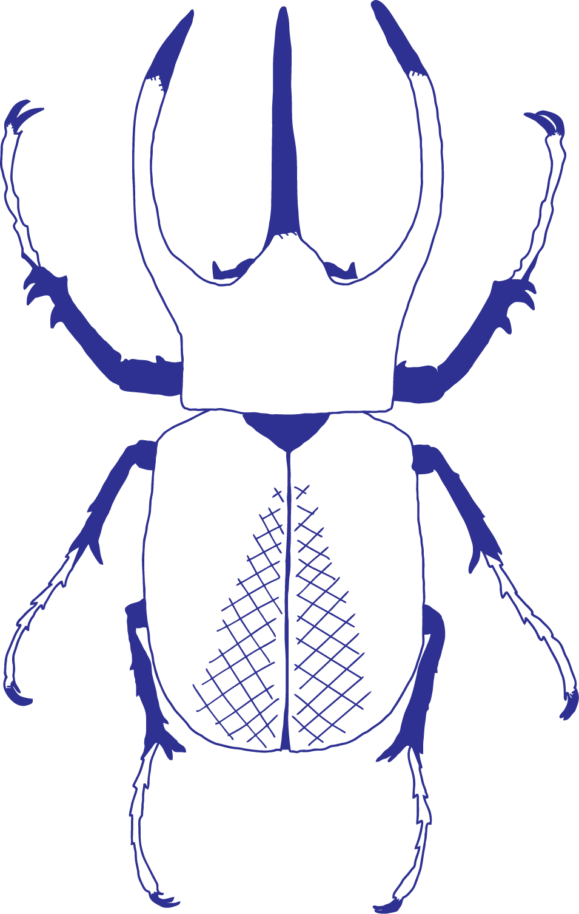
Portafolio
Golondrina Chilena
Taller Colectivo
2025-2

Jüko
Taller Colectivo
2025-2

Mesita de suelo
Fabricación Digital Avanzada
2026-1

ARV Chair
Máquinas y procesos
2025-1